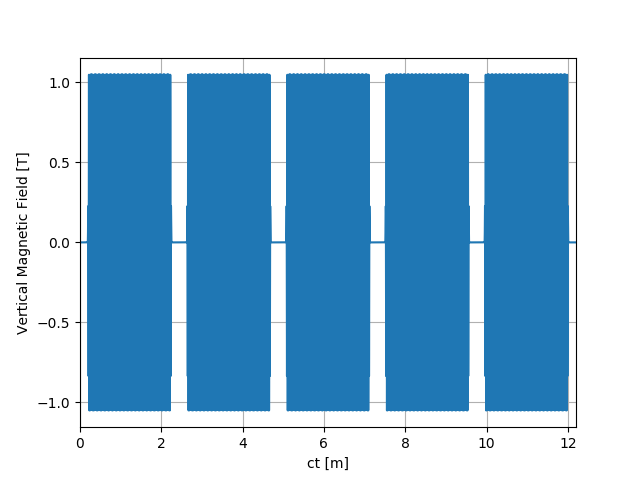
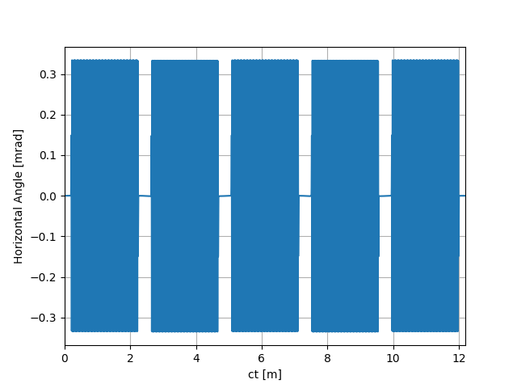
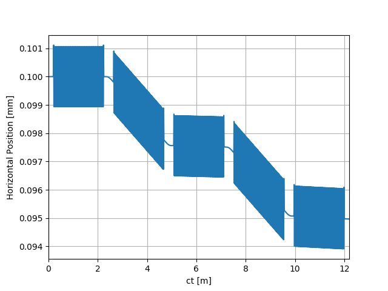
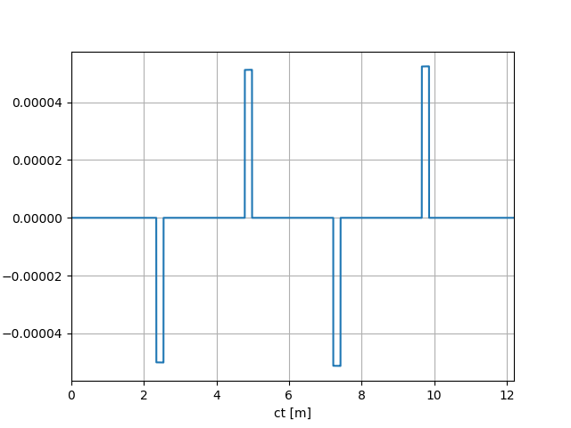
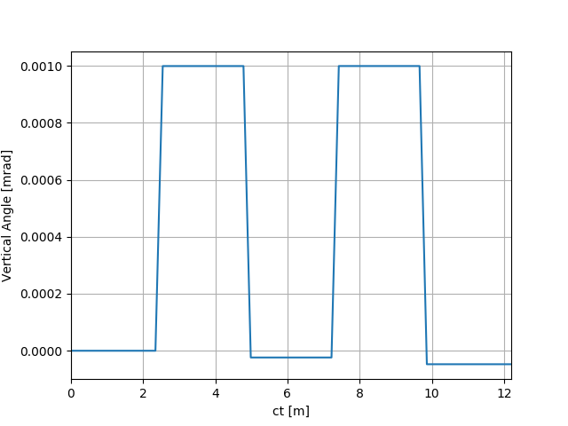
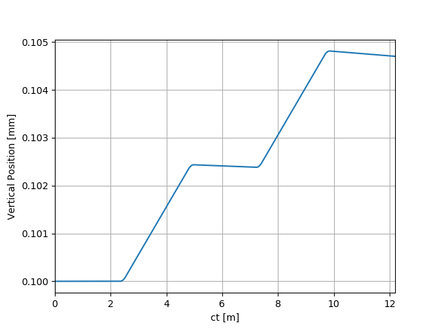

Note
Click here to download the full example code
SRW Example #2¶
Problem¶
Calculating electron trajectory in magnetic field of a segmented planar undulator
Example Solution¶
- 
- 
- 
- 
- 
- 
Out:
SRWLIB Python Example # 2:
Calculating electron trajectory in magnetic field of a segmented planar undulator with FODO lattice
Tabulating Magnetic Field for display ... done
Performing calculation ... done
Saving trajectory data to a file ... done
Plotting the results (close all graph windows to proceed with the script execution) ... done
from __future__ import print_function #Python 2.7 compatibility
from srwpy.srwlib import *
from srwpy.uti_plot import *
import os
print('SRWLIB Python Example # 2:')
print('Calculating electron trajectory in magnetic field of a segmented planar undulator with FODO lattice')
#**********************Input Parameters
#**********************Folder and File names
strExDataFolderName = 'data_example_02' #example data sub-folder name
strFldOutFileName = 'ex02_res_fld.dat' #file name for output (tabulated) magnetic field data
strTrajOutFileName = 'ex02_res_traj.dat' #file name for output trajectory data
#**********************Initial Conditions for Particle Trajectory Calculation
part = SRWLParticle()
part.x = 0.0001 #Initial Transverse Coordinates (initial Longitudinal Coordinate will be defined later on) [m]
part.y = 0.0001
part.xp = 0 #Initial Transverse Velocities
part.yp = 0
part.gamma = 3/0.51099890221e-03 #Relative Energy
part.relE0 = 1 #Electron Rest Mass
part.nq = -1 #Electron Charge
npTraj = 20001 #Number of Points for Trajectory calculation
arPrecPar = [1] #General Precision parameters for Trajectory calculation:
#[0]: integration method No:
#1- fourth-order Runge-Kutta (precision is driven by number of points)
#2- fifth-order Runge-Kutta
#[1],[2],[3],[4],[5]: absolute precision values for X[m],X'[rad],Y[m],Y'[rad],Z[m] (yet to be tested!!) - to be taken into account only for R-K fifth order or higher
#[6]: tolerance (default = 1) for R-K fifth order or higher
#[7]: max. number of auto-steps for R-K fifth order or higher (default = 5000)
#**********************Magnetic Field
numSegm = 5 #Number of ID Segments
numPer = 100 #Number of Periods in one Segment (without counting for terminations)
undPer = 0.02 #Period Length [m]
xcID = 0 #Transverse Coordinates of ID Center [m]
ycID = 0
zcID = 0 #Longitudinal Coordinate of ID Center [m]
und = SRWLMagFldU([SRWLMagFldH(1, 'v', 1.05, 0, 1)], undPer, numPer) #Undulator Segment
qf = SRWLMagFldM(0.5, 2, 'n', 0.2) #Focusing Quad
qd = SRWLMagFldM(-0.5, 2, 'n', 0.2) #Defocusing Quad
arZero = array('d', [0]*9)
undLen = (numPer + 2)*undPer
distBwSegm = 0.4 #Distance between Undulator Segments
undLenExt = undLen + distBwSegm
arZc = array('d', [-2*undLenExt, -1.5*undLenExt, -undLenExt, -0.5*undLenExt, 0, 0.5*undLenExt, undLenExt, 1.5*undLenExt, 2*undLenExt])
magFldCnt = SRWLMagFldC([und, qf, und, qd, und, qf, und, qd, und], arZero, arZero, arZc) #Container of all Field Elements
part.z = arZc[0] - 0.5*undLenExt #Initial Longitudinal Coordinate (set before the ID)
print(' Tabulating Magnetic Field for display ... ', end='')
dispBy = array('d', [0]*npTraj)
dispMagFld3D = SRWLMagFld3D(_arBy=dispBy, _nx=1, _ny=1, _nz=npTraj, _rz=5*undLenExt)
xDisp = part.x
yDisp = part.y
dispMagFldCnt = SRWLMagFldC([dispMagFld3D], array('d', [xDisp]), array('d', [yDisp]), array('d', [0]))
srwl.CalcMagnField(dispMagFldCnt, magFldCnt)
print('done')
#**********************Trajectory structure, where the results will be stored
partTraj = SRWLPrtTrj()
partTraj.partInitCond = part
#partTraj.allocate(npTraj)
partTraj.allocate(npTraj, True) #True ensures that field along trajectory will also be extracted
partTraj.ctStart = 0 #"Start Time" (c*t) for the calculation (0 corresponds to the time moment for which the initial conditions are defined)
partTraj.ctEnd = partTraj.ctStart + 5*undLenExt #End Time
#**********************Trajectory Calculation (SRWLIB function call)
print(' Performing calculation ... ', end='')
partTraj = srwl.CalcPartTraj(partTraj, magFldCnt, arPrecPar)
print('done')
#**********************Saving results
#Auxiliary function to write tabulated Magnetic Field data to ASCII file:
def AuxSaveMagFldData(dispFld3D, xc, yc, zc, filePath):
hx = 0 if(dispFld3D.nx <= 1) else dispFld3D.rx/(dispFld3D.nx - 1)
hy = 0 if(dispFld3D.ny <= 1) else dispFld3D.ry/(dispFld3D.ny - 1)
hz = 0 if(dispFld3D.nz <= 1) else dispFld3D.rz/(dispFld3D.nz - 1)
arXdef = False
if((dispFld3D.arX != None) and (len(dispFld3D.arX) == dispFld3D.nx)):
arXdef = True
arYdef = False
if((dispFld3D.arY != None) and (len(dispFld3D.arY) == dispFld3D.ny)):
arYdef = True
arZdef = False
if((dispFld3D.arZ != None) and (len(dispFld3D.arZ) == dispFld3D.nz)):
arZdef = True
nTot = dispFld3D.nx*dispFld3D.ny*dispFld3D.nz
arBxDef = False
if((dispFld3D.arBx != None) and (len(dispFld3D.arBx) == nTot)):
arBxDef = True
arByDef = False
if((dispFld3D.arBy != None) and (len(dispFld3D.arBy) == nTot)):
arByDef = True
arBzDef = False
if((dispFld3D.arBz != None) and (len(dispFld3D.arBz) == nTot)):
arBzDef = True
f = open(filePath, 'w')
resStr = '#X [m], Y [m], Z [m]'
if(arBxDef == True):
resStr += ', Bx [T]'
if(arByDef == True):
resStr += ', By [T]'
if(arBzDef == True):
resStr += ', Bz [T]'
f.write(resStr + '\n')
i = 0
z = zc - 0.5*dispFld3D.rz
for iz in range(dispFld3D.nz):
if(arZdef == True):
z = dispFld3D.arZ[iz] + zc
#print(z)
y = yc - 0.5*dispFld3D.ry
for iy in range(dispFld3D.ny):
if(arYdef == True):
y = dispFld3D.arY[iy] + yc
x = xc - 0.5*dispFld3D.rx
for ix in range(dispFld3D.nx):
if(arXdef == True):
x = dispFld3D.arX[ix] + xc
resStr = repr(x) + '\t' + repr(y) + '\t' + repr(z)
if(arBxDef == True):
resStr += '\t' + repr(dispFld3D.arBx[i])
if(arByDef == True):
resStr += '\t' + repr(dispFld3D.arBy[i])
if(arBzDef == True):
resStr += '\t' + repr(dispFld3D.arBz[i])
f.write(resStr + '\n')
i += 1
x += hx
y += hy
z += hz
f.close()
#Auxiliary function to write tabulated resulting Trajectory data to ASCII file:
def AuxSaveTrajData(traj, filePath):
f = open(filePath, 'w')
resStr = '#ct [m], X [m], BetaX [rad], Y [m], BetaY [rad], Z [m], BetaZ [rad]'
if(hasattr(traj, 'arBx')):
resStr += ', Bx [T]'
if(hasattr(traj, 'arBy')):
resStr += ', By [T]'
if(hasattr(traj, 'arBz')):
resStr += ', Bz [T]'
f.write(resStr + '\n')
ctStep = 0
if traj.np > 0:
ctStep = (traj.ctEnd - traj.ctStart)/(traj.np - 1)
ct = traj.ctStart
for i in range(traj.np):
resStr = str(ct) + '\t' + repr(traj.arX[i]) + '\t' + repr(traj.arXp[i]) + '\t' + repr(traj.arY[i]) + '\t' + repr(traj.arYp[i]) + '\t' + repr(traj.arZ[i]) + '\t' + repr(traj.arZp[i])
if(hasattr(traj, 'arBx')):
resStr += '\t' + repr(traj.arBx[i])
if(hasattr(traj, 'arBy')):
resStr += '\t' + repr(traj.arBy[i])
if(hasattr(traj, 'arBz')):
resStr += '\t' + repr(traj.arBz[i])
f.write(resStr + '\n')
ct += ctStep
f.close()
print(' Saving trajectory data to a file ... ', end='')
AuxSaveMagFldData(dispMagFld3D, 0, 0, 0, os.path.join(os.getcwd(), strExDataFolderName, strFldOutFileName))
AuxSaveTrajData(partTraj, os.path.join(os.getcwd(), strExDataFolderName, strTrajOutFileName))
print('done')
#**********************Plotting results
print(' Plotting the results (close all graph windows to proceed with the script execution) ... ', end='')
ctMesh = [partTraj.ctStart, partTraj.ctEnd, partTraj.np]
for i in range(partTraj.np): #converting from [m] to [mm] and from [rad] to [mrad]
partTraj.arXp[i] *= 1000
partTraj.arX[i] *= 1000
partTraj.arYp[i] *= 1000
partTraj.arY[i] *= 1000
uti_plot1d(partTraj.arBy, ctMesh, ['ct [m]', 'Vertical Magnetic Field [T]'])
uti_plot1d(partTraj.arXp, ctMesh, ['ct [m]', 'Horizontal Angle [mrad]'])
uti_plot1d(partTraj.arX, ctMesh, ['ct [m]', 'Horizontal Position [mm]'])
uti_plot1d(partTraj.arBx, ctMesh, ['ct [m]', 'Horizontal Magnetic Field [T]'])
uti_plot1d(partTraj.arYp, ctMesh, ['ct [m]', 'Vertical Angle [mrad]'])
uti_plot1d(partTraj.arY, ctMesh, ['ct [m]', 'Vertical Position [mm]'])
uti_plot_show()
print('done')
Total running time of the script: ( 0 minutes 1.484 seconds)